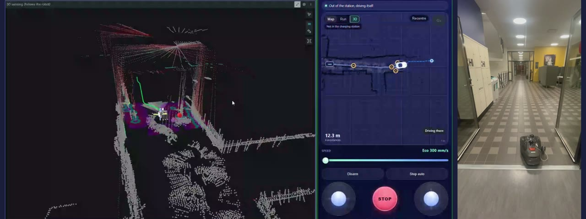
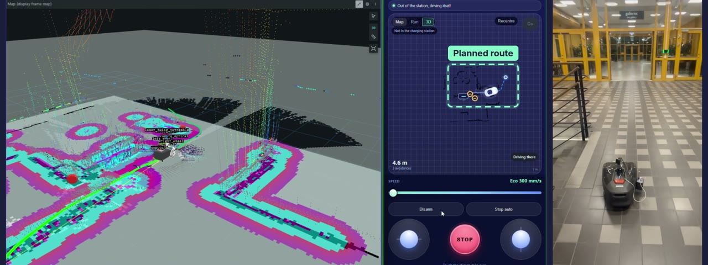
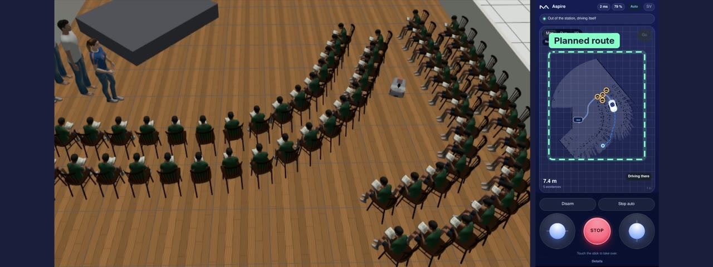

Autonomous robot · Team of 7 · 2026
New Age Robotics
A robot that maps rooms, avoids obstacles and drives to any point you tap in a phone app. Built on a Husqvarna Aspire base and a Raspberry Pi 5 over three Scrum sprints, with a phone app and a cloud backend on Azure.
My partThe 3D lidar was a big part of my work. The robot only came with a flat 2D scan, so we added a third dimension, and in the end it could map a whole room in 3D. I built the lidar's ROS 2 package, deployed the robot software to the Raspberry Pi, got the Nav2 and RTAB-Map navigation stack building on the Pi, and helped set up Foxglove on the Pi so we could watch maps and sensor data live. I also set up the team's shared dev container and kept the Scrum records.


